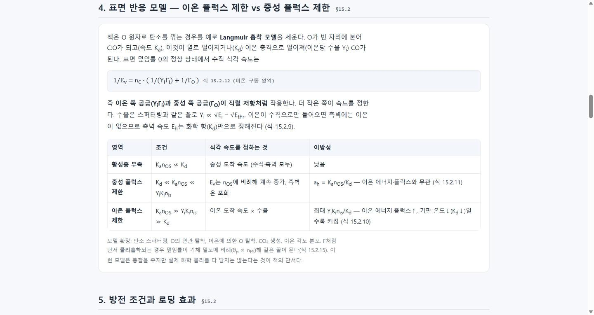
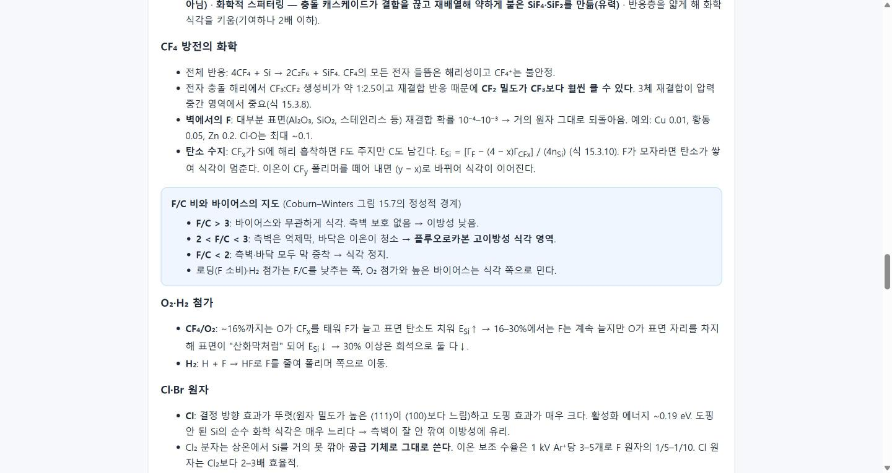
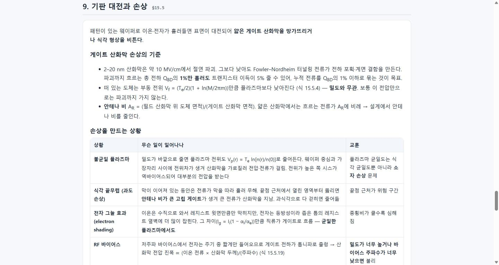

#31
Lieberman 교과서에서 플라즈마 식각 지식 추출 — 1부
지시 (원문)
Lieberman - Principles of Plasma Discharges and Materials Processing - 2nd edition 위 문서 참고하여 일반적인 플라즈마 식각 공정에 대한 지식 추출. 문서가 너무 길어서 전체 해석하는 데 오래 걸릴 경우 파트를 나눠서 진행.
지시의 나머지 부분은 사용자 요청에 따라 기록하지 않음.
분석 (Claude의 정리)
- 플라즈마 공정의 표준 교과서(794쪽, 18장)에서 식각에 필요한 지식을 추출한다. 한 번에 다 읽기엔 길어 파트로 나눈다.
- 저작권 자료이므로 원문 문장·그림은 옮기지 않고, 자기 말로 요약하되 수식·수치에는 책의 절·식 번호를 붙여 확인할 수 있게 한다.
- 지금까지의 리서치(최신 동향)와 성격이 다른 "기초 문헌 학습"이라 기록 단계를 새로 만들지 jev에게 묻는다.
과정
- 문서 확인: 794쪽, 텍스트 약 148만 자. 책갈피가 없어 본문에서 목차를 찾아 장 구조(18장)와 쪽 번호 대응(책 쪽 + 37 = 파일 쪽)을 파악.
- jev 자문 4건: 기록 단계 → 새 8단계 (선택 a, 확률 0.64, 신뢰도 0.46 — 7단계 이어가기 0.34와 차이가 크지 않음) · 파트 나누기 → 식각 관련도 순 5부 (a, 0.90) · 결과물 → 한 페이지를 파트마다 키워 가기 (a, 0.97) · 이번엔 1부만 완성하고 다음 지시를 기다릴지 → 0.68 (그렇게 함). 모두 반영.
- 5부 구성 확정: 1부 식각 직접(15장 + 9.3–9.4) → 2부 시스·이온 에너지(6장, 11.4–11.6) → 3부 방전 장비(10·11·12장) → 4부 기체 화학·진단(3·7·8장, 9.1–9.2) → 5부 나머지 기초 요약.
- 1부 정독: 15장 전체(식각 요구 조건, 네 가지 메커니즘, 표면 반응 모델, 로딩, 화학적 틀, Si의 F·Cl·Br 식각과 CF₄ 화학, SiO₂·질화막·Al·Cu·레지스트, 기판 대전·손상)와 9.3–9.4(이온 중화·이차 전자, 흡착·탈착, 스퍼터링 수율, 표면 반응 속도론).
-
research/plasma_etch_principles.html작성: 진행 상황 표(5부), 1부 11개 절, 표 10개, 주요 식에 절·식 번호, 끝에 "식각 엔지니어 체크포인트"와 이 스터디의 다른 주제(SADP·SAQP, 채널 릴리스, 노칭·로딩)와의 연결. - 로컬 미리보기 확인(가로 넘침 없음), 증거 스크린샷 4장, 목차에 추가, 기록 8단계 페이지 생성.
결과 / 증거
성공 1부(식각의 직접 원리) 완료. 2–5부는 다음 지시 때 이어서 진행.



